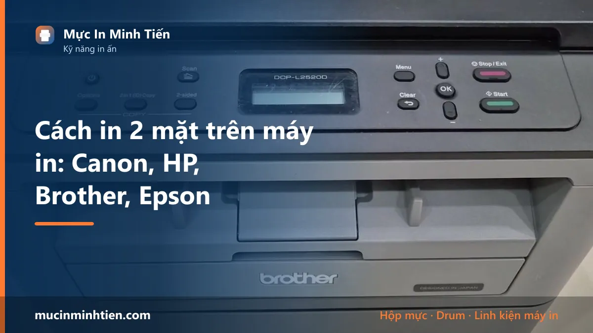
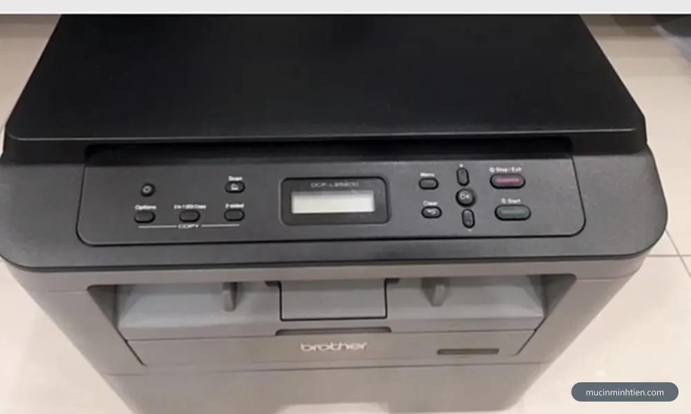
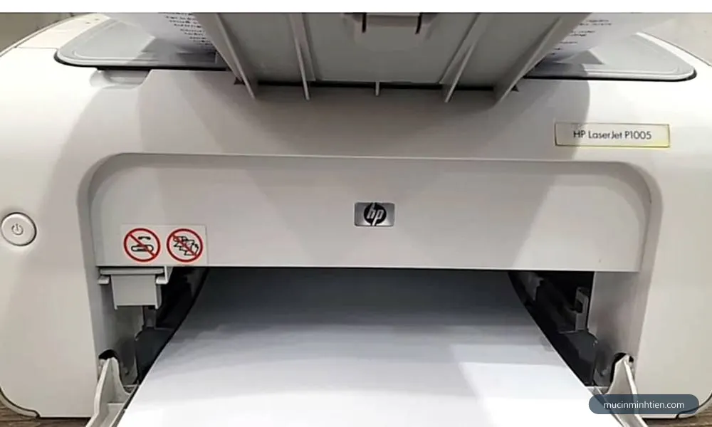
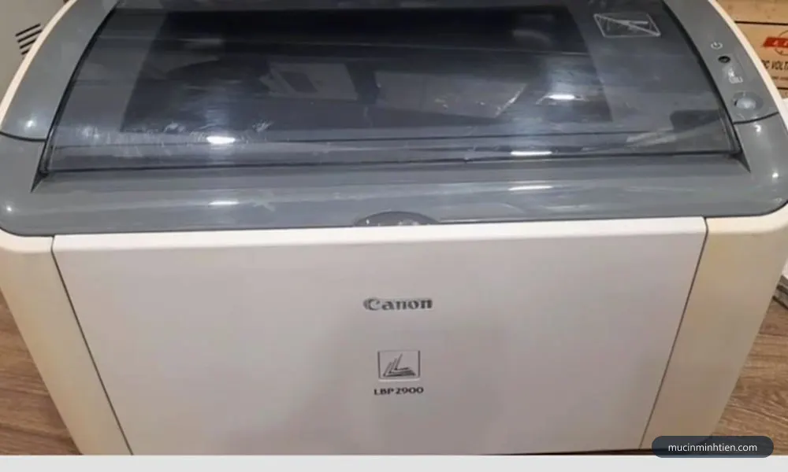
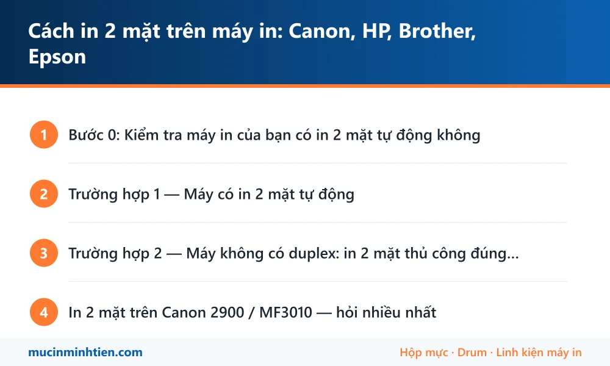

Cách in 2 mặt trên máy in: Canon, HP, Brother, Epson

In 2 mặt giúp tiết kiệm một nửa tiền giấy và tài liệu gọn hơn hẳn — nhưng đây cũng là thao tác gây bối rối nhiều nhất: máy nào tự đảo giấy được, máy nào phải lật tay, và lật thế nào để không bị ngược đầu. Bài này chia đúng 2 trường hợp để bạn làm theo.
Bước 0: Kiểm tra máy in của bạn có in 2 mặt tự động không
Cách nhanh nhất: mở Word → Ctrl+P → nhìn mục lựa chọn mặt in. Nếu có dòng "Print on Both Sides" (không kèm chữ manually) nghĩa là máy có bộ đảo giấy tự động (duplex). Nếu chỉ thấy "Manually Print on Both Sides" — máy của bạn phải lật giấy thủ công.
- Có duplex tự động: Brother HL-L2321D/L2361DN, Canon LBP252dw, HP Pro M404dn, đa số máy văn phòng đời mới.
- Không có (in thủ công): Canon LBP 2900/3000, Canon MF3010, HP 1102/M107a, các máy phổ thông giá rẻ.

Trường hợp 1 — Máy có in 2 mặt tự động
- Mở tài liệu → Ctrl+P.
- Mục Settings → chọn Print on Both Sides.
- Chọn kiểu lật: tài liệu khổ dọc bình thường → Flip pages on long edge (lật cạnh dài). In kiểu lịch/khổ ngang → Flip on short edge.
- Bấm Print — máy tự in mặt 1, hút giấy vào đảo và in mặt 2.

Trường hợp 2 — Máy không có duplex: in 2 mặt thủ công đúng cách
Nguyên tắc: in toàn bộ trang lẻ trước, lật xấp giấy, in toàn bộ trang chẵn. Với Word:
- Ctrl+P → mục Print All Pages → chọn Only Print Odd Pages → Print.
- Chờ in xong, lấy nguyên xấp giấy ra — không xáo thứ tự.
- Lật xấp giấy: với đa số máy laser nhả giấy úp mặt (Canon 2900, HP 1102…), giữ nguyên chiều đầu trang, lật mặt trắng ra và đặt lại vào khay. Mỗi dòng máy nạp giấy hơi khác — in thử 2 tờ đầu để chốt chiều trước khi in cả tập.
- Ctrl+P lần nữa → chọn Only Print Even Pages → Print.
Với file PDF (Adobe/Foxit): hộp thoại in có mục Odd or Even Pages — chọn Odd pages only in trước, rồi Even pages only, thao tác lật giấy y hệt. Muốn in dạng sách gấp đôi thì dùng chế độ Booklet.

In 2 mặt trên Canon 2900 / MF3010 — hỏi nhiều nhất
Hai dòng máy quốc dân này đều không có duplex tự động — dùng đúng quy trình thủ công ở trên. Nếu văn phòng bạn in 2 mặt hằng ngày với số lượng lớn, cân nhắc nâng cấp lên dòng có duplex (Brother HL-L2321D, Canon LBP252dw…) — tiết kiệm thời gian đáng kể; gọi 0915 510 203 để được tư vấn máy phù hợp ngân sách, và tham khảo bảng giá hộp mực cho dòng máy định mua để tính chi phí vận hành lâu dài.
